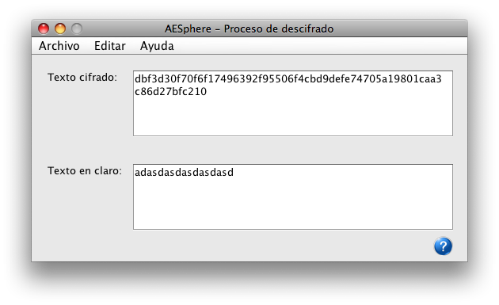

En esta ventana podremos observar el resultado de un proceso de descifrado con la aplicación.
En el apartado "Texto Cifrado" tenemos el texto que introdujimos para cifrar en formato hexadecimal.
En el apartado "Texto en Claro" obtendremos el resultado descifrado del proceso en el formato que se eligió.
Para una información más detallada vea:
Descifrado